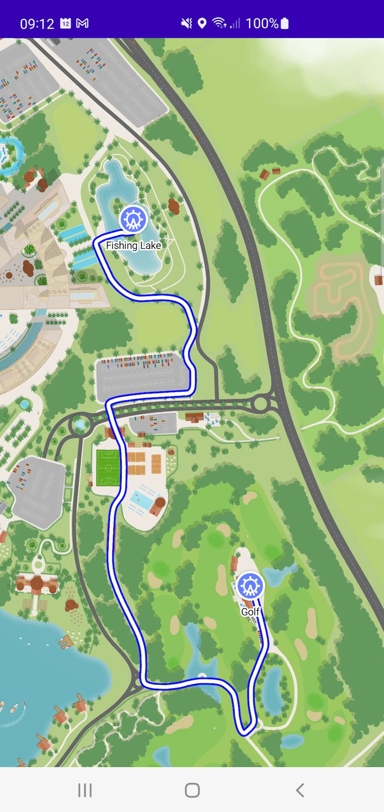

Routes
A route goes from one location to the closest of one or more destinations. It updates as its locations or the map change, whether or not it's shown on a map view.
Create a route on a Map with createRoute, giving where it starts (from) and where it can end (to):
val route = map.createRoute(
from = DestinationProvider(GeographicCoordinate(52.8983, -1.8494)),
to = listOf(DestinationProvider(GeographicCoordinate(52.8982, -1.8463)))
)
The route is a LiveData of RouteResult. The most typical use cases are covered below.
Displaying a Route
A route's path is a LiveData<Path?>, which can be drawn with Shape objects that follow the route as it updates:
mapView.addShape(Shape(path = route.path, strokeColor = Color.BLUE, strokeWidth = 4f))
mapView.addShape(Shape(path = route.path, strokeColor = Color.WHITE, strokeWidth = 2f))
Shapes are drawn in the order they're added, so the example above shows the route with a blue outline and a white fill. While there's no route, its shapes aren't drawn. Remove a shape with mapView.removeShape.
A Route to Multiple GeographicCoordinates
Multiple DestinationProvider objects can be provided in the to parameter. In this case the closest one to from is routed to.
val route = map.createRoute(
from = DestinationProvider(GeographicCoordinate(52.8983, -1.8494)),
to = listOf(
DestinationProvider(GeographicCoordinate(52.8982, -1.8463)),
DestinationProvider(GeographicCoordinate(52.8949, -1.8445))
)
)
A Route from the User's Current Location
The GoogleLocationId.HighAccuracy, GoogleLocationId.Balanced and GoogleLocationId.Passive objects (see User Location Marker) can be used within a DestinationProvider. The route then updates as the user moves.
val route = map.createRoute(
from = DestinationProvider(GoogleLocationId.HighAccuracy),
to = listOf(DestinationProvider(GeographicCoordinate(52.8982, -1.8463)))
)
Observing the Route
A RouteResult is either the current Route or the reason there isn't one:
RouteResult.Success: the currentrouteRouteResult.Failure: why there isn't oneMapUnavailable: there's no version of the map to route on yet. Itsreasonis aMapVersionResult.UnavailableNoPathNetwork: the map has no path networkLocationPendingorLocationNotPermitted: the start's location, or every destination's, has no fix yet or isn't permittedOutOfBounds: the start's tracked location, or every destination's, is outside the map. A fixed coordinate outside the map joins the nearest pathOriginNotOnPathsorDestinationsNotOnPaths: there's no suitable path on the start's level, or on any destination's, to join it toUnreachable: no path connects the start to a destination
A route to several destinations goes to the closest one it can reach, skipping any whose location isn't available or that aren't on the paths.
For example, to show the distance to the destination as the user moves:
route.observe(lifecycleOwner) { routeResult ->
when (routeResult) {
is RouteResult.Success -> Log.d("MapLayrLog", "Distance to destination: ${routeResult.route.distance}m")
is RouteResult.Failure.OutOfBounds -> Log.d("MapLayrLog", "Not on resort")
is RouteResult.Failure -> Log.d("MapLayrLog", "No route available")
}
}
Route Options
A set of flags to avoid when calculating a route can be provided. For example you might wish to calculate a route that avoids uneven terrain.
val route = map.createRoute(
from = DestinationProvider(GeographicCoordinate(52.8983, -1.8494)),
to = listOf(DestinationProvider(GeographicCoordinate(52.8982, -1.8463))),
routeOptions = PathNetwork.RouteOptions(avoidFlags = setOf("{my_route_flag_1}"))
)
Note: These options can only be used if the path network has been configured to include them
Choosing Between Routes
To compare routes with different options, pass createRoute a map of options, giving each set of options a key. The routes update together, so every value holds routes calculated from the same locations. For example, to show the accessible route when there is one and the standard route otherwise:
enum class RouteType { Standard, Accessible }
val routes = map.createRoute(
from = from,
to = to,
routeOptions = mapOf(
RouteType.Standard to PathNetwork.RouteOptions(),
RouteType.Accessible to PathNetwork.RouteOptions(avoidFlags = setOf("{my_accessibility_flag}"))
)
)
val chosenPath = routes.map { routeResults ->
val accessibleRoute = routeResults.getValue(RouteType.Accessible) as? RouteResult.Success
val standardRoute = routeResults.getValue(RouteType.Standard) as? RouteResult.Success
(accessibleRoute ?: standardRoute)?.route?.path
}
mapView.addShape(Shape(path = chosenPath, strokeColor = Color.BLUE, strokeWidth = 4f))
mapView.addShape(Shape(path = chosenPath, strokeColor = Color.WHITE, strokeWidth = 2f))
An example of using routes can be found here: ExtendedSampleActivity.kt
